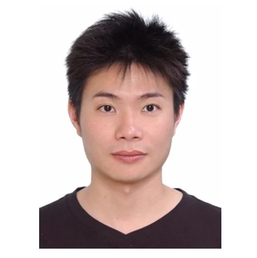
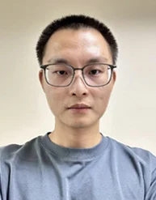

01
國立臺灣科技大學
材料科學與工程系
教授（系主任、工程學院副院長）
研究領域
- 氫能和燃料電池
- 液流電池
- 超級電容
- 電鍍和無電鍍製程
- 電化學科技
依既有編號排序 ‧ 共 19 位 ‧ 資料查證日 2026/07/22
photos，把照片命名為 01.jpg～19.jpg（對應卡片編號）放進去，重新開啟即自動帶入；沒有放的仍顯示虛線預留框。建議尺寸 600×720 px（直式 5:6），臉部置中。國立臺灣科技大學
材料科學與工程系
教授（系主任、工程學院副院長）
國立臺灣大學
凝態科學研究中心／物理系
特聘研究員、教授；中央研究院院士
中央研究院
原子與分子科學研究所
特聘研究員（合聘臺大凝態科學研究中心）

國家同步輻射研究中心
TPS 44A 發言人、副研究員

陳政龍 Jeng-Lung Chen
國家同步輻射研究中心
TPS 44A 光束線經理、副研究員
國立陽明交通大學
應用化學系
副教授
中央研究院
化學研究所
副研究員
中央研究院
化學研究所
副研究員
張孫堂 Sun-Tang Chang
國立臺灣科技大學
全球發展工程學士學位學程
專案助理教授
呂煉明 Lian-Ming Lyu
國立高雄大學
應用化學系
助理教授

黃信智
國立虎尾科技大學
材料科學與工程系
助理教授

楊詠荍
國立臺北科技大學
材料及資源工程系／資源工程研究所
助理教授

張哲瑋 Je-Wei Chang
國立聯合大學
化學工程學系
助理教授

張羅嶽 Lo-Yueh Chang
國家同步輻射研究中心
TPS 35A 光束線經理、助理研究員

盧英睿 Ying-Rui Lu
國家同步輻射研究中心
TPS 32A 光束線經理、助理研究員

林佑錩 Yu-Chang Lin
國家同步輻射研究中心
TPS 38A 光束線經理、助理研究員

黃偉翔 Wei-Hsiang Huang
國家同步輻射研究中心
TPS 44A 光束線經理、助理研究員

張嘉哲
臺北醫學大學
奈米醫學工程研究所
助理教授

胡志偉 Zhiwei Hu
馬克斯普朗克固體化學物理研究所
（MPI CPfS，德國德勒斯登）
X 光光譜研究群
研究群主持人 Group Leader